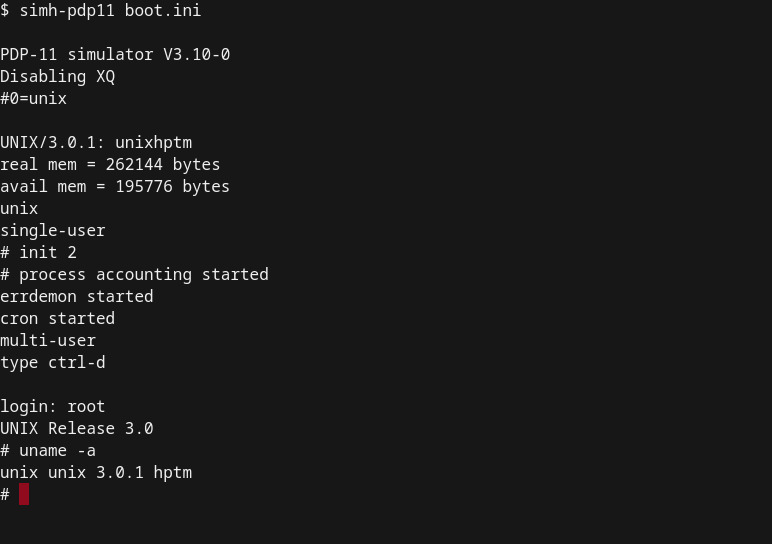

Unix's influence on Linux
Linux, an open-source operating system, has a rich history that can be traced back to Unix, its predecessor. Unix was created in the late 1960s by AT&T Bell Labs and was initially only available on a limited number of mainframe computers. As Unix grew in popularity, other companies began to sell their versions of the operating system, including Microsoft, which sold its own version called Xenix. In the 1980s, AT&T sold Unix to Novell, which then sold it to The Santa Cruz Operation (SCO).
